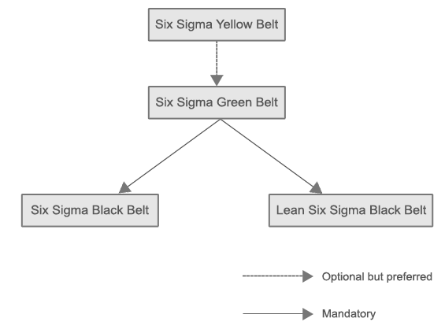

6sigmastudy's widely accepted certifications help individuals and organizations complete projects with greater efficiency, increase ROI and customer satisfaction.
Many organizations around the globe adopted Six Sigma and Lean to increase quality of the outputs and to reduce cost by means of reducing defects and removing inefficiencies. There are numerous benefits of adopting Six Sigma.
Growing popularity and acceptability of Six Sigma and Lean has created a great demand for certified professionals in the job market. Grab the opportunity and join this growing community.
Six Sigma and Lean certified professionals help organizations with improved level of project management that leads to increased ROI.
6sigmastudy certified professionals help organizations with improved level of processes and quality outputs that lead to increased ROI. They have knowledge pertaining to and can anticipate issues related to the practical implementation of Six Sigma.
